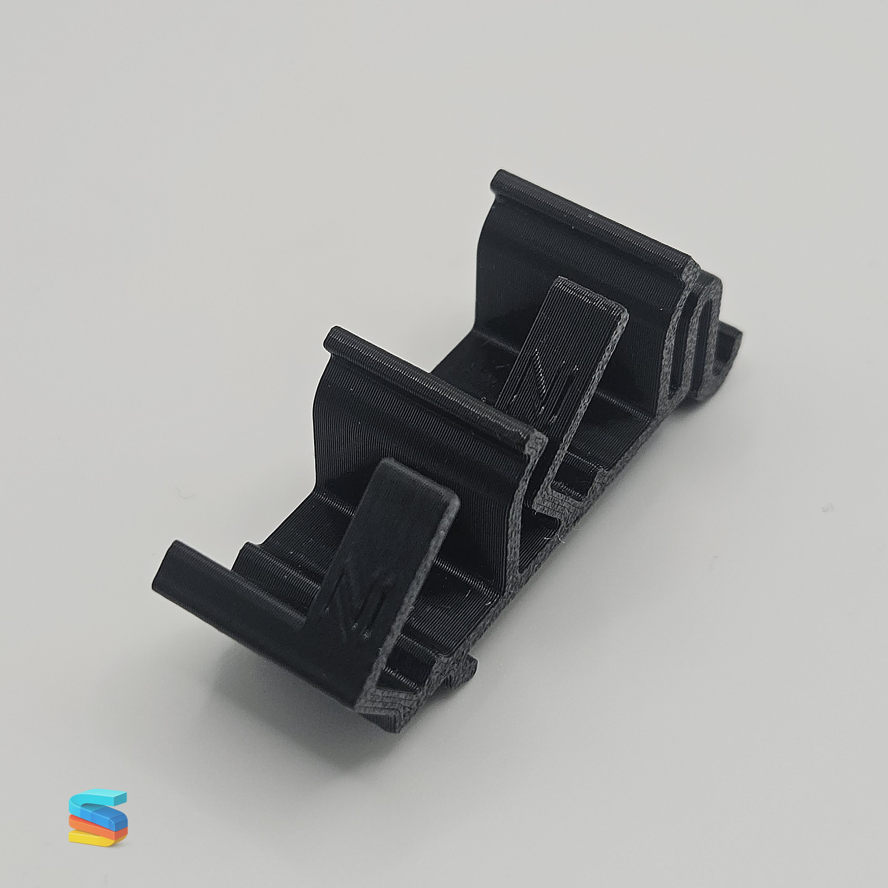
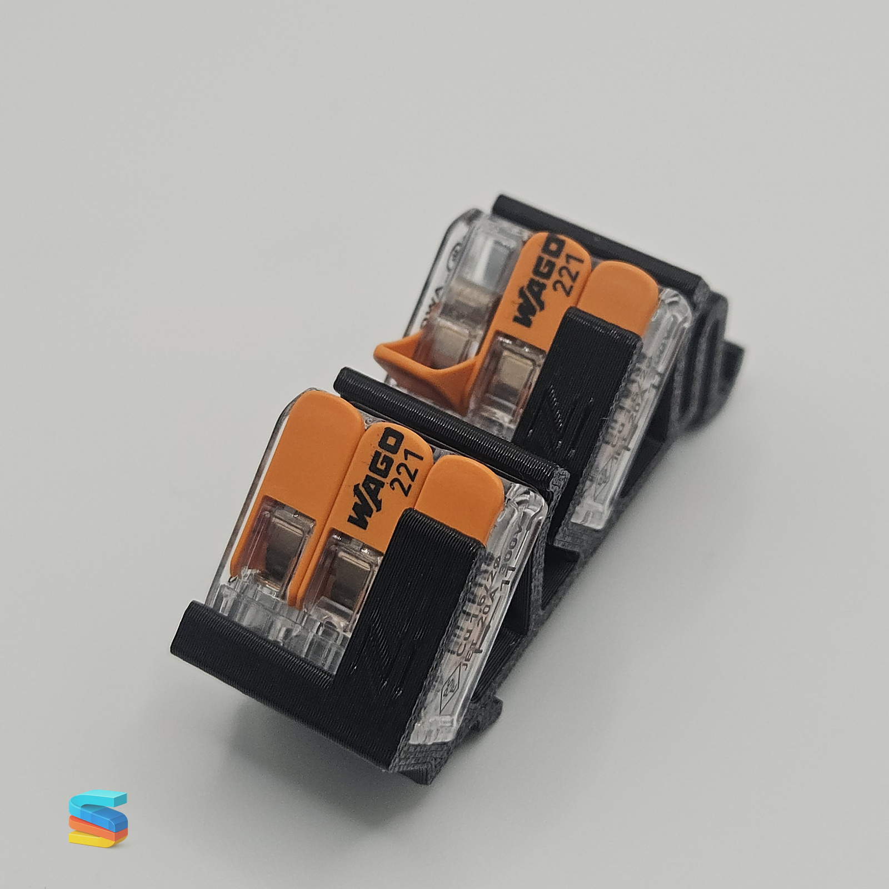
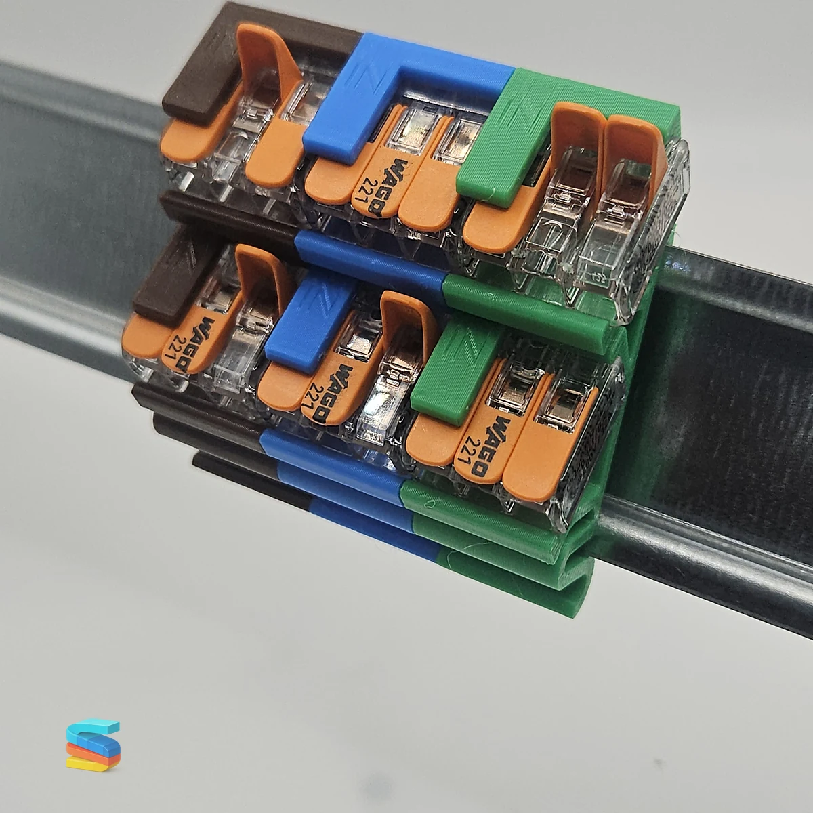
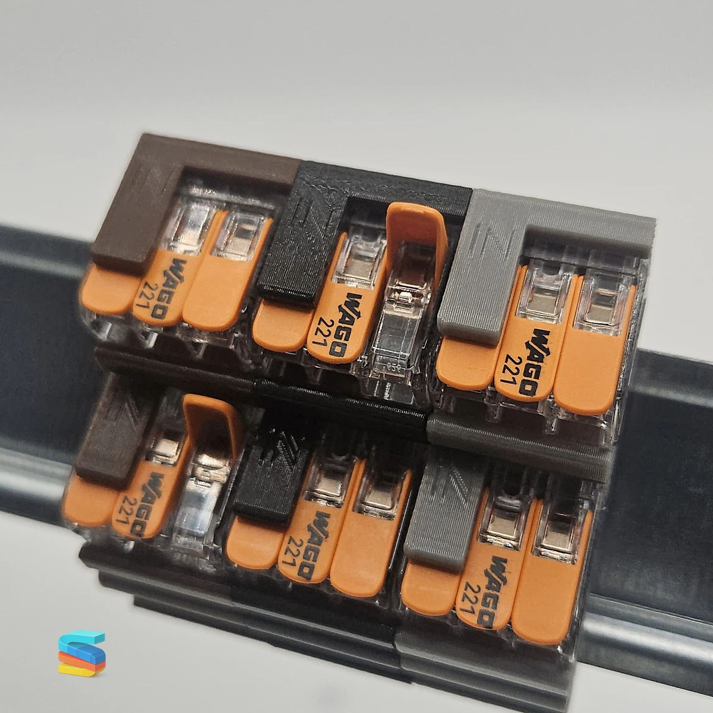
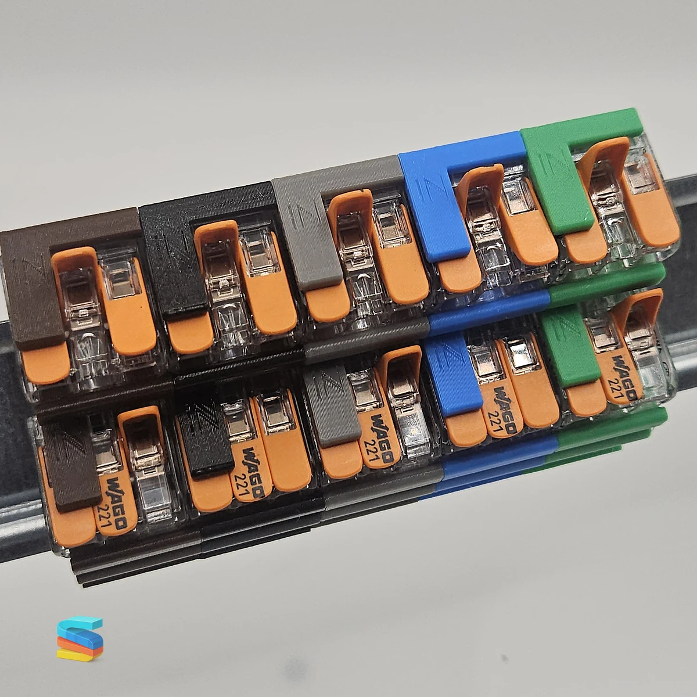

Mehr Sicherheit
Integrierte Verriegelung gegen unbeabsichtigtes Öffnen.
DIN-Schienenhalter für WAGO 221-413
Sichere und saubere Montage von WAGO 221-413 Verbindungsklemmen auf DIN-Schienen.
3D-gedruckt aus PETG - entwickelt, getestet und gefertigt in Bayern.
Warum dieser Halter?
Integrierte Verriegelung gegen unbeabsichtigtes Öffnen.
Klare Zuordnung und saubere Führung im Schaltschrank.
Die WAGO-Klemme bleibt weiterhin erreichbar.
Entwickelt, getestet und gefertigt von SLICO3D.
Varianten

Für bestehende WAGO 221-413 Klemmen und flexible Bestückung vor Ort.

Komplettansicht mit eingesetzter Klemme und geschlossener Sicherheitsverriegelung.

Ein einzelner farbcodierter Halter für eine klare Kennzeichnung einzelner Leitergruppen.

Farbige Zuordnung für L1, L2 und L3 in übersichtlichen Verteilungen.

Erweiterter Satz für saubere Organisation mehrerer Leitergruppen.

Komplettset mit allen sechs verfügbaren Farben: Schwarz, Braun, Grau, Blau, Grün und Orange.
Sicherheitsfunktion
Die Sicherheitsverriegelung hilft, ein unbeabsichtigtes Öffnen des Hebels der WAGO 221-413 Verbindungsklemme zu verhindern. Gleichzeitig bleibt der Hebel bei Bedarf manuell erreichbar, damit Wartung, Prüfung und Anpassungen weiterhin kontrolliert möglich sind.
Farbkennzeichnung
L1
L2
L3
N
PE
Sonderanwendungen
Einsatzbereiche
Technische Daten und Qualität
Durch 3D-Druck aus PETG entsteht ein robuster, funktionaler Halter für praktische Anwendungen im Schaltschrank. Jede Variante ist auf klare Zuordnung, sichere Führung und einfache Bedienbarkeit ausgelegt.
Produktbilder
FAQ
Je nach gewählter Variante.
Standard DIN-Schienen.
Ja, jederzeit manuell.